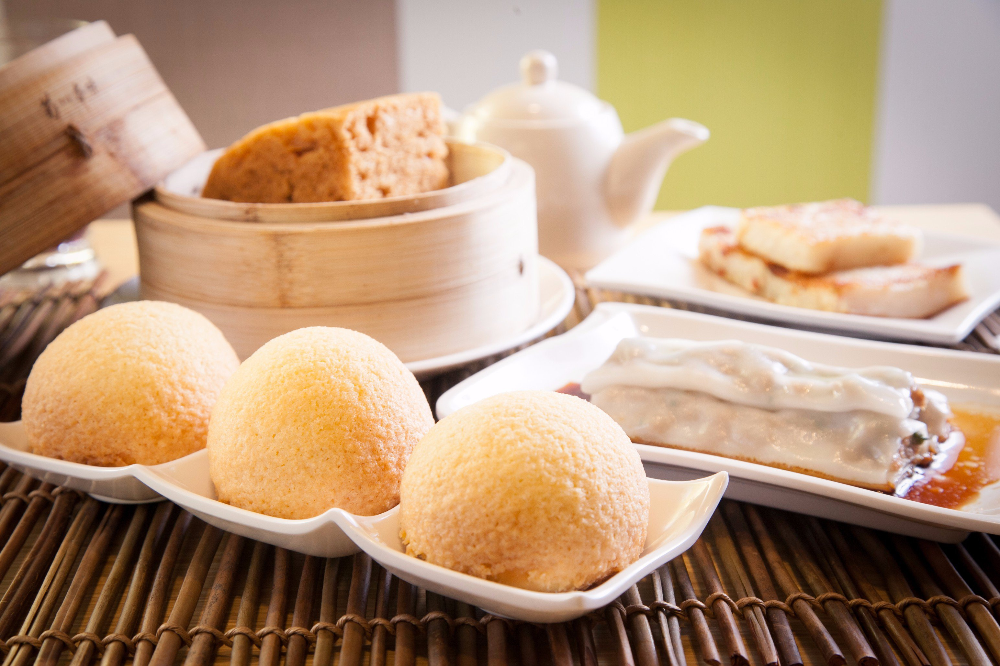

一道不到新台幣40元的點心，為什麼能摘下米其林一星？
走進港式點心店「添好運」的香港深水埗分店，裝潢簡易、座位幾乎沒有空隙；
若不看店外的排隊人潮，似乎和一般小吃店沒有兩樣，但是，這裡卻創下2個紀錄：全球最便宜、最快摘下星等的米其林餐廳。
論客單價（人均消費金額），同為米其林一星的鼎泰豐超過5百元，添好運則不到一半；但論營收，
只有46個座位的添好運中環店，單店年營收超過新台幣1億元，坪效遠超座位數破百的鼎泰豐。
下一頁